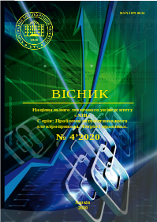

Наукова періодика України • GitHub • GitLab • Google Drive • | • index • txt • md • rus • eng
|  | Вісник Національного технічного університету "Харківський політехнічний інститут" Серія: Проблеми автоматизованого електропривода. Теорія і практика. № 4 (1358) Март 2020 року Видання присвячене висвітленню питань теорії електромеханічних систем, досягнень в галузі систем керування автоматизованого електроприводу та його компонентів, енергозбереженню засобами електроприводу. Публікуються статті, що присвячені питанням підготовки фахівців з автоматизації електромеханічних систем та електроприводу, мехатроніки та робототехніки. Для науковців, викладачів вищої школи, аспірантів, студентів і фахівців у галузі систем автоматизованого електропривода та його складових елементів.
|
PDFDjVUВ. Б. Клепіков
До 90-річчя кафедри "Автоматизовані електромеханічні системи"
Національного технічного університету "Харківський політехнічний інститут"
PDFDjVUВ. В. Грабко, О. В. Дідушок
Математична модель виявлення зносу контактної системи при комутації вакуумного вимикача
PDFDjVUО. П. Чорний, В. Ю. Ноженко, В. К. Титюк, О. К. Данилейко
Дослідження пуску частотно-регульованого електроприводу зарезонансної вібраційної машини
PDFDjVUБ. М. Чунашвілі, А. М. Петросян, Т. Г. Гамрекелашвілі
Система керування пристроєм обмеження вищих гармонік, що створені трифазними електродуговими печами
PDFDjVUС. С. Міхайков
Пристрій керування навантаженням частотно-регульованого електропривода на базі ПЛК
PDFDjVUЛ. В. Асмолова, М. В. Аніщенко
Локаційні датчики на платі "Сенсори мехатроніки" на базі освітньої платформи National Instruments
PDFDjVUВ. В. Бушер, О. В. Глазєва
Дослідження нормальних та аварійних режимів роботи суднових високовольтних перетворювачів частоти
PDFDjVUО. В. Семіков
Застосування багатофазного широтно-імпульсного перетворювача з двома накопичувачами електроенергії в тяговому електроприводі електромобіля
PDFDjVUБ. В. Воробйов
Енергоефективний асинхронний електропривод електромобілю
PDFDjVUО. Г. Гриб, Г. А. Сендерович, О. В. Дяченко, І. Т. Карпалюк, С. В. Швець
Аналіз методів визначення часткової участі суб'єктів у відповідальності за порушення якості електроенергії по синусоїдальності кривої напруги
PDFDjVUО. Ю. Лозинський, Я. Ю. Марущак, В. І. Мороз, Я. С. Паранчук
Технологічні особливості представлення електричного режиму дугової сталеплавильної печі моделлю зміни станів
PDFDjVUМ. Й. Муха, А. О. Дранкова, І. І. Красовський
Експериментальна установка для вивчення і дослідження енергоефективних режимів електромеханічних систем
PDFDjVUЄ. В. Сакун
Комп'ютерне моделювання синхронізації швидкостей в електроприводі електромобіля зі спрощеною коробкою передач
{kind=link}